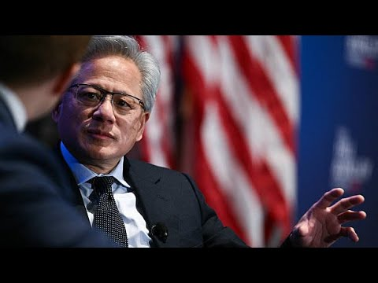

来B站一起耍【Global每日英语简报】
【英伟达CEO谈关税、AI芯片与中国竞争】
Summary: The Nvidia CEO discusses U.S. investment in infrastructure, tariffs, AI development policies, Huawei's technological advancements, and China's competitive position in AI.
摘要： 英伟达CEO探讨了美国基础设施投资、关税政策、AI发展政策、华为的技术进步以及中国在AI领域的竞争地位。

⏱️ Estimated Reading Time: 4 min
Is your investment of $500 billion United States, what the president calls an investment, or are you just trying to produce $500 billion in order to produce $500 billion worth of infrastructure requires enormous amounts of investment from a lot of different partners.
美国5000亿美元的投资，总统称之为投资，还是仅仅为了创造5000亿美元的基础设施价值？这需要大量不同合作伙伴的巨额投资。
And so we've we've brought onshore many partners to help us do that.
因此，我们已经引进了许多本土合作伙伴来协助完成这一目标。
And we're going to have to build our own factories in order to do that.
为此，我们还需要建立自己的工厂。
What's your message and conversation gonna be like today with the president when it comes to tariffs?
在关税问题上，你今天与总统的对话和信息会是什么？
I'm going to count on the fact that that the administration has a good plan.
我相信政府有一个好的计划。
And from our perspective, we would like to have policies that support and help accelerate the development of artificial intelligence in this new industry.
从我们的角度来看，我们希望有支持并加速这一新兴产业中人工智能发展的政策。
Do you think they're going to have an edit of the diffusion rule that was under the Biden administration, basically placing all these different countries in different buckets?
你认为他们会修改拜登政府时期的扩散规则吗？该规则基本上将不同国家分到不同的类别中。
Well, I'm not I'm not sure what the new diffusion role is going to be.
嗯，我不确定新的扩散规则会是什么。
But whatever happens to be, it becomes it really has to recognize that the world has changed fundamentally since the previous diffusion rule was was was released.
但无论如何，它必须认识到自上次扩散规则发布以来，世界已经发生了根本性变化。
We need to accelerate the diffusion of American technology around the world.
我们需要加速美国技术在全球的扩散。
And so the policies and the encouragement from the administration that really needs to be behind that.
因此，政府的政策和鼓励必须支持这一点。
What's your reaction to The Wall Street Journal saying Huawei is advancing to catch up to your highest level chips?
你对《华尔街日报》称华为正在追赶你们最高水平芯片的报道有何反应？
There's no question that Huawei is one of the most formidable technology companies in the world, and they're incredible in computing their incredible networking technology and software capabilities, all of the essential capabilities to advance A.I..
毫无疑问，华为是全球最具实力的科技公司之一，他们在计算、网络技术和软件能力方面都非常出色，这些都是推动AI发展的关键能力。
And they have they've made enormous progress in the last several years.
而且他们在过去几年取得了巨大进步。
Whatever whatever policy the ambitious administration puts together really should enable us to accelerate the development of AI and enable us to compete on a global global stage.
无论政府制定什么雄心勃勃的政策，都应该能让我们加速AI发展，并在全球舞台上竞争。
How far is one more like? How far behind do you think China is?
中国落后多少？你认为中国落后多远？
China is not behind anybody.
中国并不落后于任何人。
China's right behind us.
中国紧追在我们身后。
I mean, we're very, very close.
我是说，我们非常非常接近。
But remember, this is a long term this is an infinite race.
但记住，这是一场长期的、无限的竞赛。
There is no you know, in the world of life, there is no those you know, there's no two minute end of the quarter.
你知道，在生命的世界里，没有所谓的季度末两分钟。
There's there's no such thing.
没有这种东西。
And so we're going to compete for a long time.
因此，我们将长期竞争。
And just remember that this is this is a country with great will, and they have great technical capabilities.
请记住，这是一个有强大意志的国家，他们拥有强大的技术能力。
50% of the world's A.I. researchers are Chinese.
全球50%的AI研究人员是中国人。
And so this is a this is an industry that that we will have to compete for.
因此，这是一个我们必须竞争的行业。